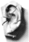

|
To make requests: NEW! Check
out our webcam HERE KCPR is a member of the Intercollegiate Broadcasting System, who recently went to bat educational stations and convinced the RIAA and the Library of Congress to reasonable fees for streaming on the internet. Read more about it on their website.
|
The URL
of our stream is now: Click HERE to listen with Quicktime Need
to upgrade? Experiencing drop-offs with RealPlayer
10? Please
note: Contact the webmaster if you are having problems connecting to the stream: internet.kcpr@gmail.com
 Thanks for listening! |

|
|
|
Copyright © 2005 KCPR 91.3fm,
San Luis Obispo, California
|
|